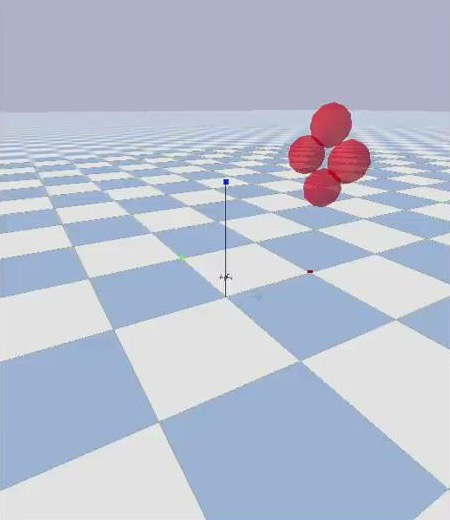

Crystal Zhou
I'm a graduate researcher in Mechanical Engineering at Carnegie Mellon University, working in the Robotic Caregiving & Human Interaction Lab at the Robotics Institute.
My research focuses on shared autonomy and robot learning — how humans and pretrained robot foundation models (e.g. vision-language-action policies) can work together so that robots stay robust with minimal human input. Previously, I worked on autonomous flight controls at Lockheed Martin and studied spinal reflex modulation in the NeuroMechatronics Lab.
Research
I'm interested in human-robot interaction, robot learning, and control. Click a project to see more.
O. Refy, Crystal Zhou, et al.
Society for Neuroscience Annual Meeting, 2024 (PSTR076.14) A human study analyzing H-reflex suppression during asymmetric gait.
Projects
 Control Barrier Functions for Obstacle Avoidance on a Nano-Quadrotor
Control Barrier Functions for Obstacle Avoidance on a Nano-Quadrotor
Crystal Zhou, Mason Stark, Katherine Horng, Qihan Wang
Control Systems Integration, CMU
Real-time obstacle avoidance on a palm-sized Crazyflie drone using control barrier functions, taken from simulation to real flights.
Small drones have to dodge obstacles in real time using only lightweight onboard sensing. We used control barrier functions (CBFs), which define a safe set and solve a small quadratic program (CBF-QP) each step to minimally adjust the commanded velocity so the drone never leaves it. We ran this on a Crazyflie, which detects obstacles with its Multi-Ranger deck and estimates its own motion with an optical-flow deck.
I led the hardware side, building on Tayal et al.'s collision-cone CBF (C3BF) code. I wrote the Crazyflie interface, which streams state estimates and Multi-Ranger readings over the radio and turns them into obstacles. I also wrote the controller: a 3D C3BF over the drone's 12-state dynamics, solved each step as a QP over velocity and yaw-rate commands. To make it hold up in real flights, I added obstacle memory, a slack variable to keep the QP feasible, velocity limits, and an escape maneuver for when the drone ends up inside a collision cone. On hardware the drone follows a wave-like reference path while avoiding obstacles. In PyBullet simulation, the team added a control Lyapunov function (CLF) for position tracking and extended the barrier to moving obstacles. We compared CLF-CBF against MPC + CBF on a 20-scenario benchmark measuring success rate, time to goal, smoothness, tracking error and control effort.
The biggest lesson was the sim-to-real gap. Most hardware failures came from sensing, not control: the Multi-Ranger only looks along four axes and can miss obstacles off to the side.

Optimal Control & Reinforcement Learning, CMU Real-time trajectory tracking using the full nonlinear dynamics model and constraints, supporting aggressive maneuvers like drifting.
Experience
- 2025 – present Graduate Research Assistant, Robotic Caregiving & Human Interaction Lab, CMU Robotics Institute
- Summer 2025 Software Engineer Intern, Flight Controls, Lockheed Martin Aeronautics
- Summer 2024 Technical Project Management Intern, Lockheed Martin Skunk Works
- Spring 2024 Undergraduate Research Assistant, NeuroMechatronics Lab, CMU
- Summer 2023 Engineering Intern, Bee (Building Energy Efficiency)
- 2021, 2023 Manufacturing Intern, R2Sonic
- Summer 2022 Lab Technician Intern, Adare Pharma Solutions
Education
- 2026 M.S. Mechanical Engineering, Carnegie Mellon University
- 2025 B.S. Mechanical Engineering & Biomedical Engineering, Carnegie Mellon University
Misc
Co-captain of the CMU NCAA DIII Varsity Women's Tennis team; All-American in singles and doubles (2021–2023).